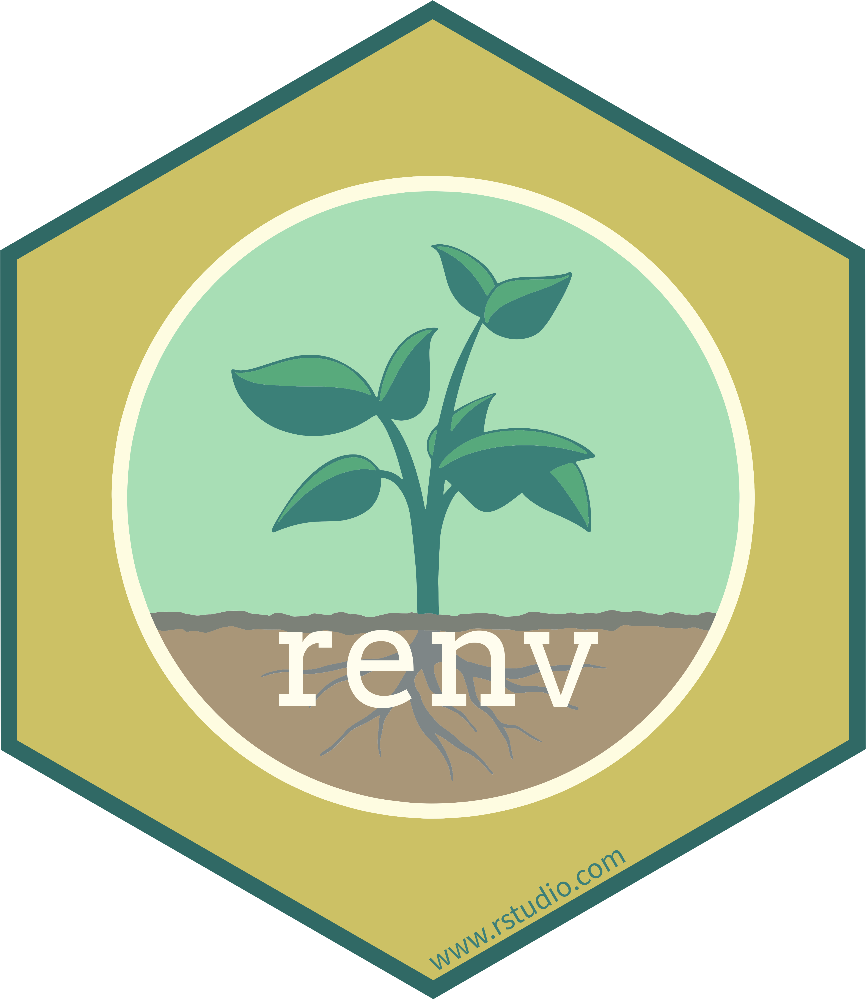
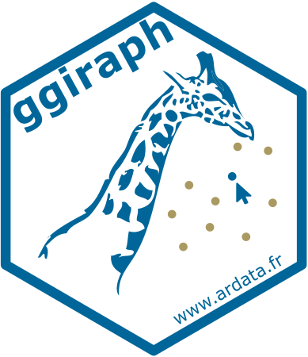

%%{
init: {
'themeVariables': {
'edgeLabelBackground': '#224289'
}
}
}%%
flowchart LR
a1[Creación] ==> a2[Desarrollo]
a2 ====> |<span class='eos-icons--hourglass'></span>| a3[Objetivo final]
a3 ==> a4([Publicación])
a3 ==> a5([Congreso])
a3 ==> a6([Informe])
Proyectos de investigación más interesantes con Quarto
Seminario #2
2025-02-26
Introducción
- Portada
- Autores
- Afiliciaciones
- Fecha de la última modificación
- Palabras clave
- Links útiles

Introducción
- Portada
- Tabla de contenido
- Secciones y subsecciones

Introducción
- Portada
- Tabla de contenido
- Notebooks
- Descripción de los códigos de programación
- Funciones específicas y paquetes de utilidad

Introducción
- Portada
- Tabla de contenido
- Notebooks
- Referencias bibliográficas
- Vista previa de la referencia en el texto
- Formato de bibliografía según estilo deseado


{targets} permite la ejecución automática de funciones y gestiona las dependencias entre estas.
graph LR
x3d474db92cf09724>"mensaje"]:::outdated ==> xc5ec810879cc40ee>"recorte"]:::outdated
x3d474db92cf09724>"mensaje"]:::outdated ==> x32cb0d977e75588d>"elimino"]:::outdated
x3d474db92cf09724>"mensaje"]:::outdated ==> x0dc39fa9e42347ba>"reflectancia"]:::outdated
x3d474db92cf09724>"mensaje"]:::outdated ==> x0e71b645b3e50d0c>"script_descarga_py"]:::outdated
x3d474db92cf09724>"mensaje"]:::outdated ==> x70dd0adf732b9ac4>"estado_descarga"]:::outdated
xfabd587be49f2fed>"fecha"]:::outdated ==> x0dc39fa9e42347ba>"reflectancia"]:::outdated
xfabd587be49f2fed>"fecha"]:::outdated ==> x38637a02f9b83fc8>"lab"]:::outdated
x0e71b645b3e50d0c>"script_descarga_py"]:::outdated ==> x70dd0adf732b9ac4>"estado_descarga"]:::outdated
x2eb57580dd338e28(["excel"]):::outdated ==> x1a91c1978c7a143b(["datos_lab"]):::outdated
x38637a02f9b83fc8>"lab"]:::outdated ==> x1a91c1978c7a143b(["datos_lab"]):::outdated
x3975d57dc4a04f5c>"descarga"]:::outdated ==> x0a08cea06a6d211f(["producto_zip"]):::outdated
xe56f95f4237d1e66(["script_py"]):::outdated ==> x0a08cea06a6d211f(["producto_zip"]):::outdated
xd2e55a6b497fb062(["fecha_descarga"]):::outdated ==> x4b150ba8dbe4203d(["recorte_tif"]):::outdated
x0a08cea06a6d211f(["producto_zip"]):::outdated ==> x4b150ba8dbe4203d(["recorte_tif"]):::outdated
xc5ec810879cc40ee>"recorte"]:::outdated ==> x4b150ba8dbe4203d(["recorte_tif"]):::outdated
x29bd13377b9e6171>"archivo_excel"]:::outdated ==> x2eb57580dd338e28(["excel"]):::outdated
x2eb57580dd338e28(["excel"]):::outdated ==> xd2e55a6b497fb062(["fecha_descarga"]):::outdated
xfabd587be49f2fed>"fecha"]:::outdated ==> xd2e55a6b497fb062(["fecha_descarga"]):::outdated
xd2e55a6b497fb062(["fecha_descarga"]):::outdated ==> xe56f95f4237d1e66(["script_py"]):::outdated
x0e71b645b3e50d0c>"script_descarga_py"]:::outdated ==> xe56f95f4237d1e66(["script_py"]):::outdated
x2eb57580dd338e28(["excel"]):::outdated ==> x75ae8feee719d1e2(["datos_gis"]):::outdated
xd2e55a6b497fb062(["fecha_descarga"]):::outdated ==> x75ae8feee719d1e2(["datos_gis"]):::outdated
x4b150ba8dbe4203d(["recorte_tif"]):::outdated ==> x75ae8feee719d1e2(["datos_gis"]):::outdated
x0dc39fa9e42347ba>"reflectancia"]:::outdated ==> x75ae8feee719d1e2(["datos_gis"]):::outdated
classDef outdated stroke:#FFC0CB,color:#FFFFFF,fill:#224289;
classDef errored stroke:#FFC0CB,color:#FFFFFF,fill:#224289;
classDef none stroke:#FFC0CB,color:#FFFFFF,fill:#224289;

{renv} gestiona los entornos de ejecución y versiones de los paquetes necesarios.


{tidyverse} procesamiento general de los datos.

{terra} lectura de ráster y vectores.

{corrr} cálculo de coeficientes de correlación lineal.

{ggplot2} creación de figuras básicas.

{ggiraph} creación de figuras interactivas.

{leaflet} mapas interactivos.
Copernicus Data Space

- Colección
- Nivel de procesamiento
- Región de interés
- Rango de tiempo
- Credenciales